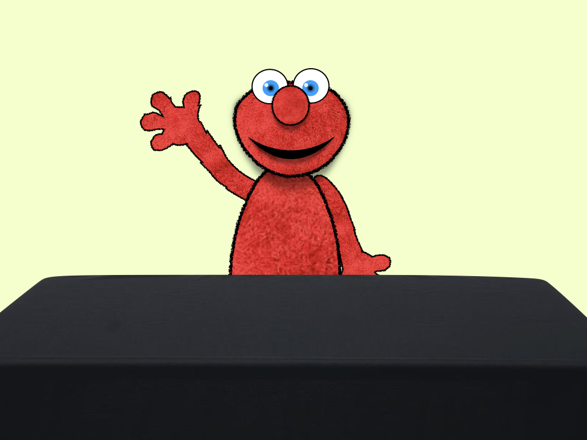

<!--cgi-bin directory for scripts that executed (eg: php to save data to server); expts for files that don't need to be executed-->

<!DOCTYPE html>

<html>
    <head>
        <title>FUNCTIONAL elmo</title>        
        <script src="./jsPsych/jspsych.js"></script> 
        <script src="./plugins/jspsych-external-html.js"></script>
        <script src="./plugins/jspsych-html-keyboard-response.js"></script>
        <script src="./plugins/jspsych-html-button-response.js"></script>
        <script src="./plugins/jspsych-image-button-response.js"></script>
        <script src="./plugins/jspsych-survey-html-form.js"></script>
        <script src="./plugins/jspsych-audio-button-response.js"></script>
        <script src="./plugins/jspsych-fullscreen.js"></script>
        <script src="./plugins/jspsych-instructions.js"></script>
        <script src="./plugins/jspsych-video-button-response.js"></script>
         
<!--        <script src="./SCIP_jsPsych-summer.css"> </script>  -->
        <link href="./css/SCIP_jspsych.css" rel="stylesheet" type="text/css"/> 
        
        <script src="./jsPsych/mmturkey.js"></script>
        <script src="/jsPsych/jquery-1.11.2.min.js"></script>
        <script src="https://ajax.googleapis.com/ajax/libs/jquery/1.8.3/jquery.min.js"></script>
        <script src="https://ajax.googleapis.com/ajax/libs/jqueryui/1.9.2/jquery-ui.min.js"></script>
        <link type="text/css" href ="https://ajax.googleapis.com/ajax/libs/jqueryui/1.9.2/themes/base/jquery-ui.css" rel="stylesheet"/>
    </head>
    
   <!-- <style>
        .container {
            position: relative;
            width: 100%;
            max-width: 400px;
        }
        .container img {
            width: 100%;
            height: auto;
        }

        .container .left-btn {
            position: absolute;
            top: 50%;
            left: 25%;
            transform: translate(-50%, -50%);
            -ms-transform: translate(-50%, -50%);
            background-color: #f1f1f1;
            color: red;
            font-size: 16px;
            padding: 16px 30px;
            border: none;
            cursor: pointer;
            border-radius: 5px;
            text-align: center;
        }
         .container .right-btn {
            position: absolute;
            top: 50%;
            left: 50%;
            transform: translate(-50%, -50%);
            -ms-transform: translate(-50%, -50%);
            background-color: #f1f1f1;
            color: black;
            font-size: 16px;
            padding: 16px 30px;
            border: none;
            cursor: pointer;
            border-radius: 5px;
            text-align: center;
        }
</style>
-->
    <body> 
    </body>

<script> 

var timeline = [];
    
    /* IN PROGRESS: insert external html link to welcome screen ---- "welcome-screen.html" */
        
/*var welcomeExternal = {
  type:'external-html',
  url: "welcome-screen.html",
//  check_fn: check_input,
  cont_btn: "start"
};
    timeline.push(welcomeExternal);*/
     
//var testTrials = ['recap-I',
//                  'recap-II',
//                  'recap-III',
//                  'recap-IV',
//                  'gen-I',
//                  'gen-II',
//                  'critical-A',
//                  'critical-B'];


/*    var welcomeScreen = {
        type: 'survey-html-form',
        preamble: "Please enter the following: ",
        button_label: "Begin Game",
        dataAsArray: 'true',
        html: "<p>Subject ID <input id="subjectID" type="text"/><br><br>List Number <br><br>"
    }
    timeline.push(welcomeScreen);*/
    
    /*var check_input = function(elem) {
  if (document.getElementById('subjectID').checked) {
    return true;
  }
  else {
    alert("Please enter valid subject ID");
    return false;
  }
  return false;
};*/
   // timeline.push(welcome);
    

    
    
    
    /* adding subject number and list number to data object  */
    jsPsych.data.addProperties({
        subjectID: 'subjectID',  /*needs to be text input from intro html slide */
        listNum: 'listNum'   /*needs to be text input from intro html slide */
    });
        
    
    var welcome2 = {
        type: 'html-keyboard-response',
        stimulus: "Welcome to our study. Press any key to continue."
        /*+"<p class='block-text'><center> Subject ID: <br>
      <input type='text' id='subjectID' name='subjectID' size='30'> 
    </center></p>" 
        + "<p class="block-text"><center>Age: <br><input type="text" id="subjectAge" name="subjectAge" size="30"> </center></p>"
        +"<p class="block-text"><center>Today's date: <br><input type="text" id="todaysDate" name="todaysDate" size="30"> </center></p>"'*/
    }
    timeline.push(welcome2);

/* entering fullscreen mode */
    timeline.push({  
        type: 'fullscreen',
        fullscreen_mode: true
    });
    
    var intro = {
        type: 'instructions',
        pages: ["<p><center>This is Elmo!" + "<p> Did you know that Elmo LOVES gumballs?" + "<p>",
                "<p> In this game, Elmo will show you which jars of gumballs he likes better than others." + 
                "<p> Your job is to remember what he likes, so that you can help him out later in the game!" + 
                "<p>", 
        "Press 'next' when you're ready to see which jars of gumballs Elmo likes!"],
        show_clickable_nav: true
    }
    timeline.push(intro);
        
    var familiarization = {
        type: 'video-button-response',
        width: 1200, 
        start: 200,
        controls: true,
        sources: ['SCIP_videos/fam-ALL.mp4'],
        choices: ['previous','next']
    }
    timeline.push(familiarization);
        
        
    /*
    var familiarization = {
        type: 'video',
        width: 800, 
        start: 0,
        controls: true,
        timeline: [
            sources:['../SCIP_videos/fam-I.mp4',
                      '../SCIP_videos/fam-II.mp4',
                      '../SCIP_videos/fam-III.mp4',
                      '../SCIP_videos/fam-IV.mp4'
                      ]
        ]
    }
    */
        
    var testInstructions = {
        type: 'instructions',
        pages: ["<p> Now that Elmo has shown you what he likes, he needs your help!" + "<p> On the next screen, you'll see two jars. You can use your finger to click on the jar that Elmo would like better! Are you ready?"],
        show_clickable_nav: 'true'
    }
    timeline.push(testInstructions);

/* Write a function that plays a sound when image is clicked  */
    
/* TODO: add list# and maybe trial# to data  */
    var testBlock = {
        type: 'html-button-response',
        timeline:[
            {stimulus: "",
             button_html: [
            '<button class="btn-left-jar"></button>',
            '<button class="btn-right-jar"> </button>'
            ],
             data:{
                trialId: 'trial-1',
                trial_type: 'TBD',
                correct_jar: 'Right'}
             },
            
            {stimulus: "",
             button_html: [
            '<button class="btn-left-jar">  </button>',
            '<button class="btn-right-jar">  </button>'
            ],
             data:{
                trialId: 'trial-2',
                trial_type: 'TBD',
                correct_jar: 'tbd2'}
            },
            
            {stimulus: "",
             button_html: [
            '<button class="btn-left-jar">  </button>',
            '<button class="btn-right-jar">  </button>'],
             data:{
                trialId: 'trial-3',
                trial_type: 'TBD',
                correct_jar: 'tbd2'}
            },
            
            {stimulus: "",
             button_html: [
            '<button class="btn-left-jar">  </button>',
            '<button class="btn-right-jar">  </button>'
            ],
             data:{
                trialId: 'trial-4',
                trial_type: 'TBD',
                correct_jar: 'tbd2'}
            },
            
            {stimulus: "",
             button_html: [
            '<button class="btn-left-jar">  </button>',
            '<button class="btn-right-jar">  </button>'
            ],
             data:{
                trialId: 'trial-5',
                trial_type: 'TBD',
                correct_jar: 'tbd2'}
            },
            
            {stimulus: "",
             button_html: [
            '<button class="btn-left-jar">  </button>',
            '<button class="btn-right-jar">  </button>'
            ],
             data:{
                trialId: 'trial-6',
                trial_type: 'TBD',
                correct_jar: 'tbd2'}
            },
            
            {stimulus: "",
             button_html: [
            '<button class="btn-left-jar">  </button>',
            '<button class="btn-right-jar">  </button>'
            ],
             data:{
                trialId: 'trial-7',
                trial_type: 'TBD',
                correct_jar: 'tbd2'}
            },
            
            {stimulus: "",
             button_html: [
            '<button class="btn-left-jar">  </button>',
            '<button class="btn-right-jar">  </button>'
            ],
             data:{
                trialId: 'trial-8',
                trial_type: 'recap',
                correct_jar: 'tbd2'}
            }
        ], 
        prompt: "Which jar do you think Elmo will pick?",
        margin_vertical: '-1200px',
        choices: ['Left', 'Right'],
        is_html: 'true',
        timing_response: 1000
    }
    timeline.push(testBlock);
        
  /* Exiting fullscreen mode   */      
    timeline.push({
        type: 'fullscreen',
        fullscreen_mode: false
    });
    
    var finale = {
        type: 'html-keyboard-response',
        stimulus: "Thanks for playing the game with us!",
    }
    timeline.push(finale);
        

    

    jsPsych.init({
//        display_element: $('#jspsych-target'),
        timeline: timeline,
        default_iti: 500,
//        preload_images: ['SCIP_yellow-jar-1.png', 'SCIP_blue-jar-2.png'],
        on_finish: function() {jsPsych.data.displayData('csv');}
    })
    
    
    // select all trials
var all_data = jsPsych.data.get();

// get csv representation of data and log to console
console.log(all_data.csv());
    
</script>

</html>